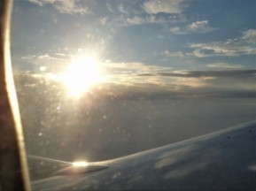
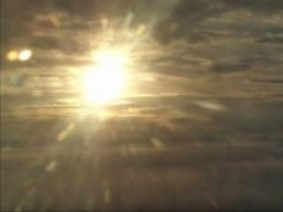
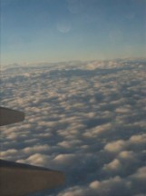

云南之旅2 在飞机上
#1 云南之旅2 在飞机上 作者：蓝天蓝 发表时间：2011-6-29 17:59:18
云南之旅2 在飞机上
时间2011.6.21.晚上18:30
18:30分终于坐上了飞机，因为自己本来就有点晕车，也怕晕机，就提前准备了一个塑料袋。心情嘛，还是有些紧张，毕竟是第一次做飞机。
飞机开始起飞估计也有19:00了，飞机在跑道上面几乎是慢慢跑了一圈 才到达起飞飞跑道上面，飞机在慢慢的起飞中，只觉得耳边嗡嗡作响，感觉心跳有点加快，头晕的感觉倒是没有。
我在位置比较好，15E正好对着机翼的位置，靠在窗边，我就从窗户向外望去，看到地上的草地慢慢的向后退着，飞机在慢慢的升高之中，感觉高低起伏着，开始的时候，窗外的建筑物还可以看得挺清晰的，随着飞机的不断飞高，就只能看到白茫茫的一片了。
等飞机达到平飞的高度，就没有什么感觉了，只是还是觉得心跳有点快，不过一会就好了。
时间也不知过了多长时间，我顺着窗户向外望去，看到窗外天空的景色真是太美了，就拿起照相机照个不停。这个时候阳光还挺强呢，一会照在我的脸上，霎是耀眼，一会又从眼前消失了，顺着还有点刺眼的阳光从窗户望去，蓝天 白云 漂浮在飞机下面， 白云千变万化的，实在是美丽极了。


大家是不是觉得很漂亮呢
到了吃饭的时间了，工作人员开始给大家发送晚饭了， 坐在窗边，一边吃着晚饭，一边欣赏着夕阳西下的美景，才窗口望去，飞机就感觉是静止在空中一样，下面的白云如波浪起伏一般，远处的夕阳余光在天边留下一抹淡淡的红，迎面看去，夕阳还是一样耀眼呢。碰上气流层的时候，飞机偶尔会感觉有点颤抖，一会就好了。时间不长，再向外望去，就看不到夕阳了，一会呢，又看到了天边那抹淡淡的红，把蓝天和白云隔开了，从窗口往前望去，远处的白云就如波涛骇浪一样
往后面望去，感觉就不一样了，白云就像平静的湖面被风轻轻一吹，泛起小小的涟漪

又过了一会再像窗外望去，白云又发生了变化，前面的白云反而平静的没有一丝涟漪，后面的白云却起伏波动了起来，真称得上千变万化了。天渐渐黑了，天边那抹淡淡的红也随之不见了，白云也变成了灰黑色。时间又过去了一会，窗外就什么也看不到了，索性安心的睡上一会..........
可是事与愿违，怎么也睡不着，耳边飞机嗡嗡的想着，这个时候开了手机看看时间，刚好21:00了，就又关上了手机，靠在座位上面遐想着，到达昆明以后，见到和尚老师的情景.....和尚老师说来接机的，我就想，我们不认识，和尚老师会不会举着一个接站牌，上面写上：接蓝天，又想见面后，是握手呢，还是拥抱呢，..........
刚才飞机员报了时间21:40，快到昆明机场了，这个时候，窗外黑的连个星星都看不到，飞机在慢慢降低高度，起飞变化还是挺大的，一会感觉在下降，下降一会以后，回复平飞的时候，就感觉在上升似地。
［此帖子已被 蓝天蓝 在 2011-6-29 18:07:51 编辑过］
［ 被感动的人 于 2011-6-29 20:57:13 时花20金币送鲜花一朵］
［ 被感动的人 于 2011-6-29 20:57:16 时花20金币送鲜花一朵］
［ 被
#2 Re:云南之旅2 在飞机上 作者：被感动的人 发表时间：2011-6-29 20:57:09
云在身边的感觉不错哇~ 我记得几年前有志照过一组照片，飞机上的云，比这个还要亮一些，很漂亮滴~